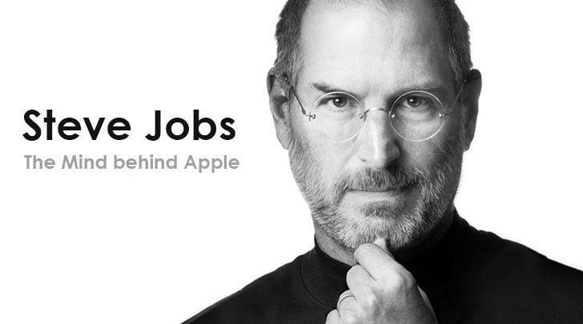

1955-2011
"Design is not just what looks like and feels like. Design is how it works"
Steven Paul Jobs was born on February 24, 1955 in San Francisco, California. His unwed biological parents, Joanne Schieble and Abdulfattah Jandali, put him up for adoption. Steve was adopted by Paul and Clara Jobs, a lower-middle-class couple, who moved to the suburban city of Mountain View a couple of years later. The Santa Clara county, south of the Bay Area, became known as Silicon Valley in the early 1950s after the sprouting of myriads of semi-conductor companies in the area. As a result, young Steve Jobs grew up in a neighborhood filled with engineers working on electronics and other gizmos in their garages on weekends. This shaped his interest in the field as he grew up. At age 13, he met one the most important persons in his life: 18-year-old Stephen Wozniak, an electronics whiz-kid —and an incorrigible prankster, much like Steve himself.